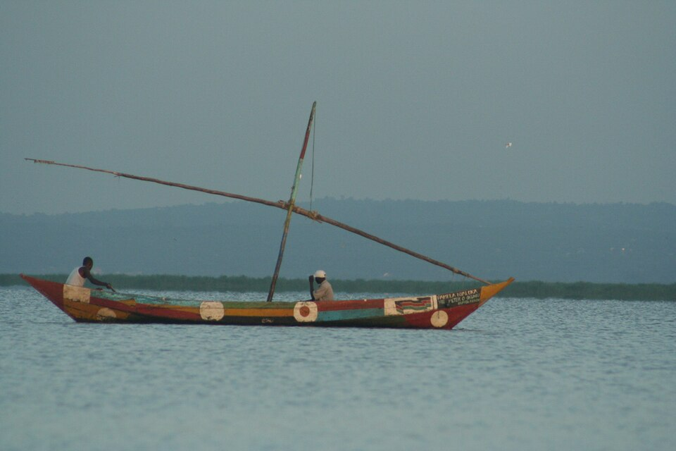

Lake Victoria · 03
The Luo
A lake-shore story carried through music, fishing, family and movement.
A living profile
Memory in rhythm
Discover a culture whose relationship with Lake Victoria is expressed in song, story and community.
HeartlandLake VictoriaWestern Kenya and the lake shore
LanguageDholuoA Nilotic language with a strong musical tradition
LivelihoodsFishing & farmingLake knowledge, crops and trade
HeritageSong & storyMusic, instruments and oral history



The Luo archive lives in music, fishing knowledge, naming traditions and the stories shared between generations. Dholuo, song and instrument-making help carry memory across the lake region.
What to explore
Follow the relationship between water, movement, music and belonging.
- Lake Victoria fishing knowledge and shoreline life
- Nyatiti and other musical traditions
- Clans, naming and family histories